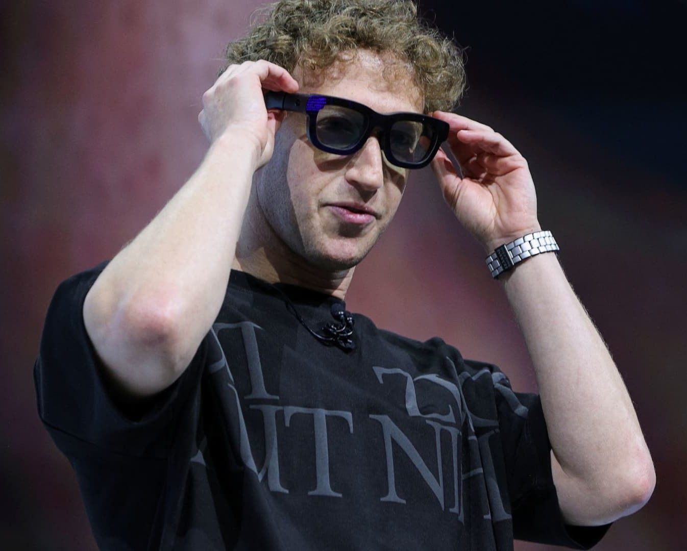
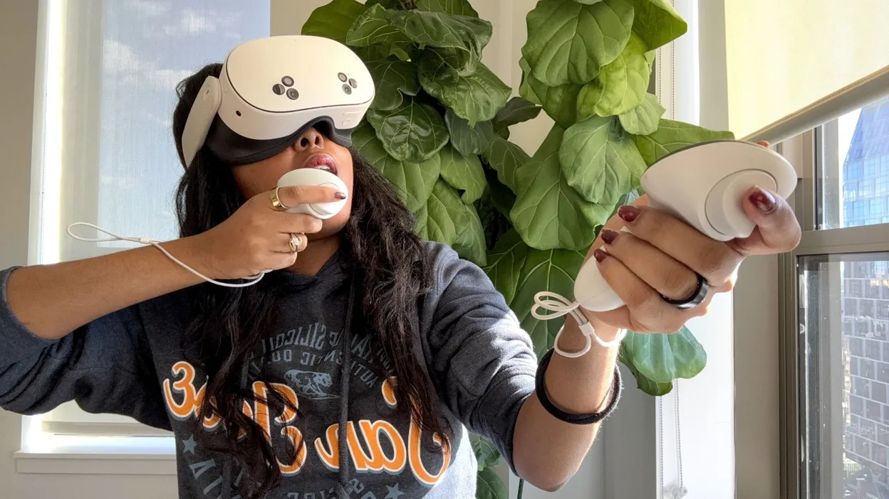

El Meta Connect 2024, que tuvo lugar en septiembre pasado, fue presentado nuevamente por el propio Mark Zuckerberg. En esta ocasión, las actualizaciones se han enfocado en avances para la realidad virtual (VR) y la realidad aumentada (AR), junto con el lanzamiento de nuevos productos de IA que podrán ser utilizados en WhatsApp, Facebook e Instagram. Como es sabido por todos, Meta Connect es uno de los eventos anuales más relevantes en el ámbito tecnológico global, donde se presentan los nuevos productos de Meta. Gafas Orion: La mayor apuesta de futuro Las Gafas Orion son un artículo que Meta ha estado creando durante una década. Estas gafas cuentan con pantallas que ofrecen un amplio campo visual, permitiendo la interacción entre el mundo físico y contenido digital superpuesto.  Entre los propósitos de Meta para este dispositivo se encuentra lograr unas gafas que no necesiten audífonos ni cables, con un peso menor a 100 gramos. Asimismo, sus lentes serán lo bastante luminosos para permitir la visibilidad en cualquier tipo de luz. La incorporación de las pantallas facilitará la realización de múltiples actividades con ellas o añadir una pantalla del tamaño de un cine, lo que permitirá observar el entorno físico con contenido holográfico superpuesto. Aunque estas gafas no están disponibles todavía, Mark Zuckerberg mencionó que este futuro dispositivo sería una de las innovaciones de Meta Connect 2024. Meta Quest 3 S: La versión económica del próximo visor El nuevo Meta Quest 3S es una variante más accesible del Meta Quest 3 y está concebido para proporcionar una experiencia en color de alta definición, logrando una integración casi perfecta entre el mundo real y el virtual.  A pesar de que presenta un diseño parecido al modelo previo, estas son sus características fundamentales: - PROCESADOR: Estas gafas emplean el mismo procesador Qualcomm presente en los Meta Quest 3, asegurando un funcionamiento suave y gráficos de excelente calidad. - PANTALLA: Cuenta con una pantalla LCD que posee una resolución de 1.832 X 1.920 píxeles por ojo, ligeramente inferior a la de su versión precedente. - ALMACENAMIENTO: Está compuesto por un almacenamiento interno de 128GB o 256GB. - CÁMARAS: Dispone de 2 cámaras de seguimiento por infrarrojos, 2 iluminadores infrarrojos y 2 cámaras de paso en la sección frontal. - MANDOS: Emplea los mismos que los Meta Quest 3 Nuevas actualizaciones para las Gafas Ray-Ban Una de las novedades en Meta Connect 2024 fue la presentación de las recientes actualizaciones de uno de sus artículos más reconocidos, las gafas Ray-Ban, un dispositivo de lentes inteligentes con Meta AI. Estas lentes pueden capturar, compartir y almacenar imágenes y videos de alta calidad. La nueva versión incluye cámara HD, botón para tomar fotos, altavoces abiertos para música y llamadas, y un panel táctil para el control, con una duración de batería de 4 horas. De igual modo, pueden funcionar como un asistente de IA y ejecutar tareas basadas en el texto que observas, hacer llamadas e incluso escanear códigos QR. Para lanzamientos futuros, se estima que estas gafas funcionen como un asistente de traducción que llevará a cabo la interpretación del idioma que oigas en tiempo real, lo cual será muy útil para viajar. Asimismo, las gafas pretenden ser una herramienta inclusiva para personas ciegas y con discapacidad visual, quienes recibirán asistencia a través de un video en tiempo real que describe lo que tienen frente a ellos.